01
Visual Design
Turning ideas into clean, expressive and engaging visual communication.
A collection of experiences, ideas and creative work built around communication, leadership and meaningful real-world experiences.
Explore Portfolio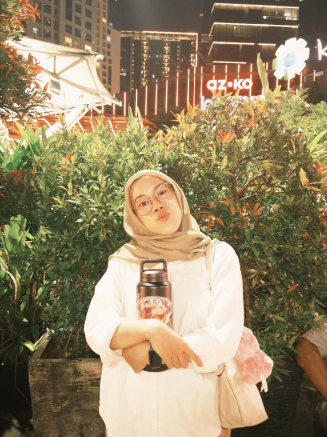
Add hero photo Add photo
Add photo
My name is Fauzianne Sabila Aprilianty, Shane for short. I'm a Communication student with a passion for storytelling and public communication. Experienced in event coordination and operations from concept planning, systems alignment, and cross-division workflow management, to running a pre-order (PO) based business independently, overseeing everything from order management to fulfillment.
Proven track record of successfully executing events from the ground up, including founding a department-scale program that has since become an annual tradition. Passionate about turning ideas into well-structured, efficiently run operations that bring people and processes together.
My knowledge and skills in communication stem from a strong academic foundation. I studied at SMA Negeri 109 Jakarta before continuing my education at Universitas Andalas, where I am pursuing a degree in Communication Science with a concentration in Journalism.
During my studies, I developed strong writing, research, and media production skills, from journalistic feature writing to radio script production. I also gained hands-on experience through student organizations and community programs, which strengthened my understanding of communication in real-world, real-audience settings.
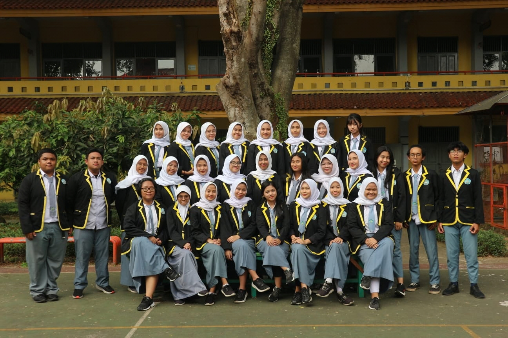
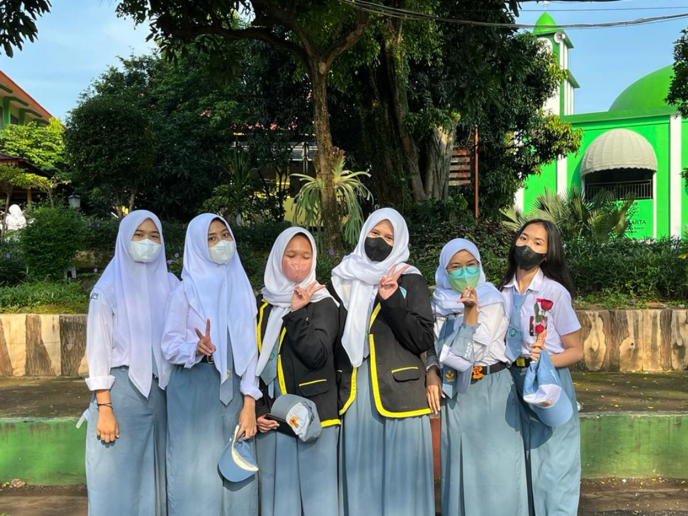
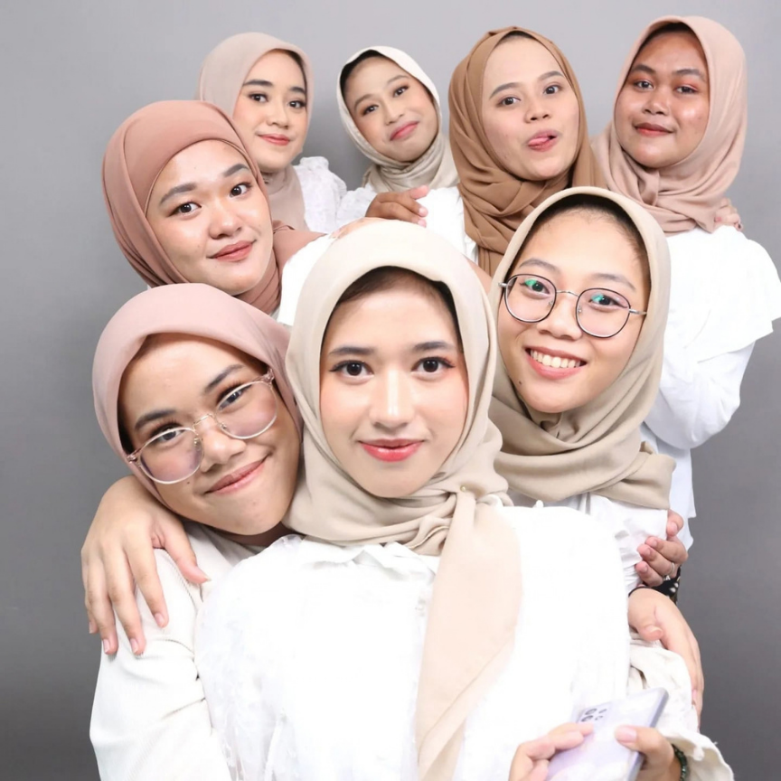
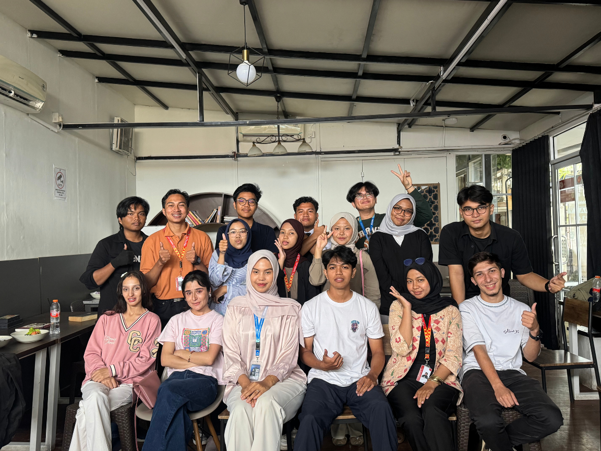
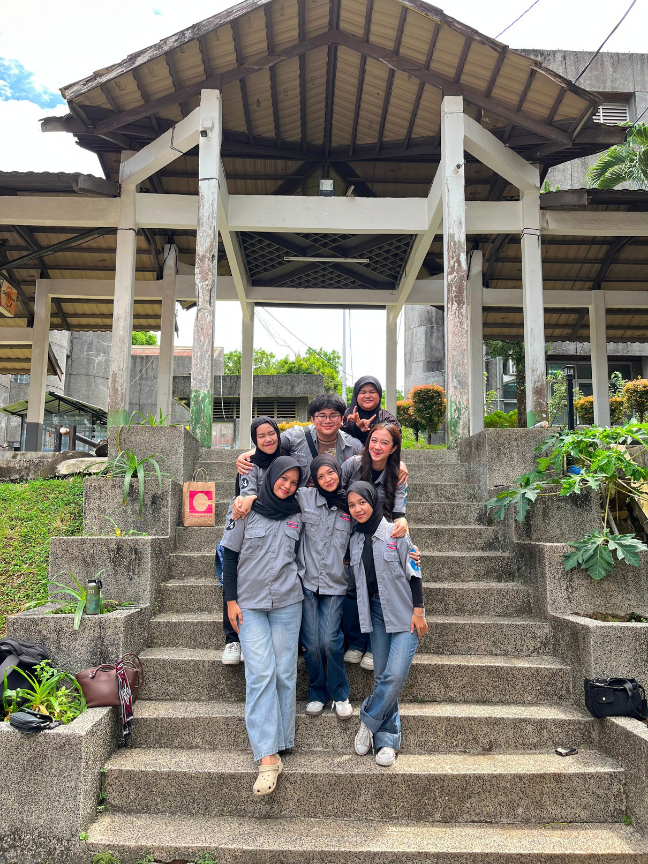
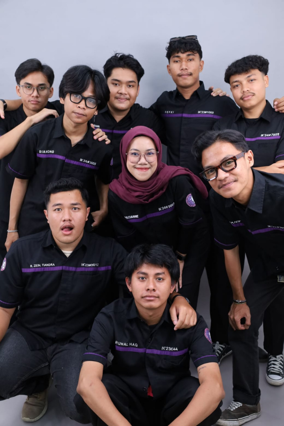
Turning ideas into clean, expressive and engaging visual communication.
Organizing systems, workflows, logistics and execution from concept to completion.
Leading teams, coordinating people and creating collaborative working environments.
Creating written communication through research, storytelling and audience-focused content.
Organizational development, coordination and leadership activities within HMIK Unand.
Founded and led a department-scale event from the ground up, which has since become an annual tradition.
Developed event concepts, aligned systems and regulations, and coordinated faculty stakeholders.
Participated in community-oriented activities and collaborative volunteer programs.
Jambore Nasional 2022, Kemah Nasional 2023, and Raimuna Nasional 2023.
Participated in school organizational programs, coordination and student activities.
Contributed as both actor and production team member in an English-language theatre project.
Supported administrative and data-related activities in a community health program.
Facilitated community engagement and communication activities in Padang Panjang.
A selection of creative, academic and real-world projects.
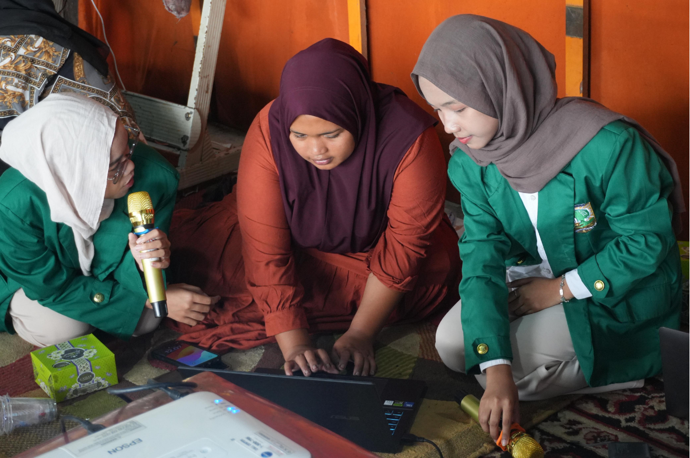
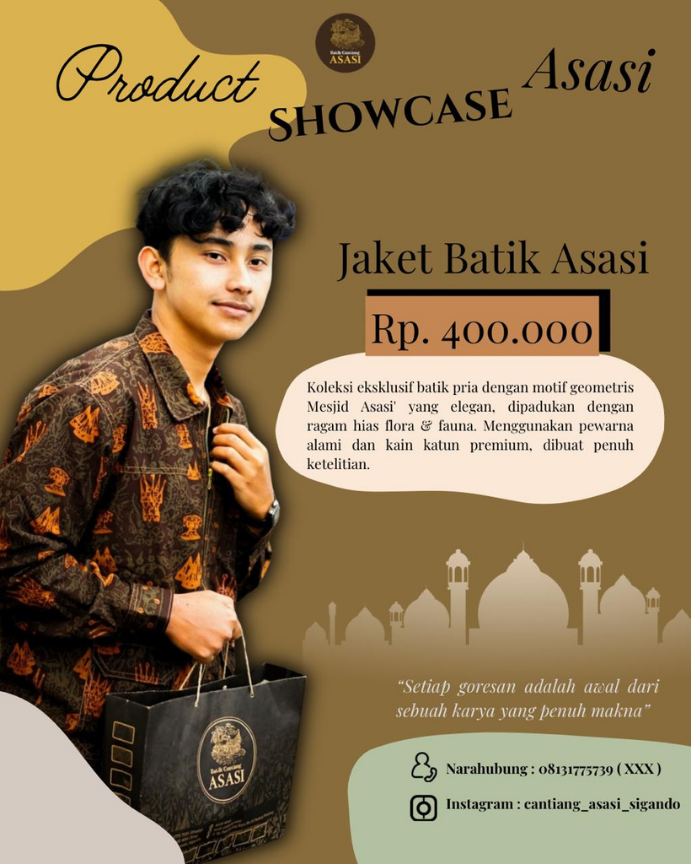
Graphic design workshop for local batik UMKM in Padang Panjang, focused on improving branding through Canva templates and visual identity.
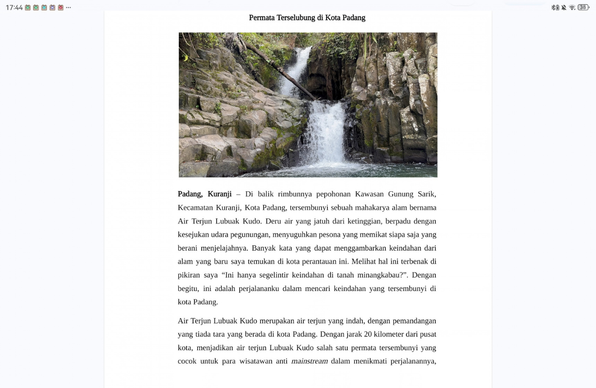
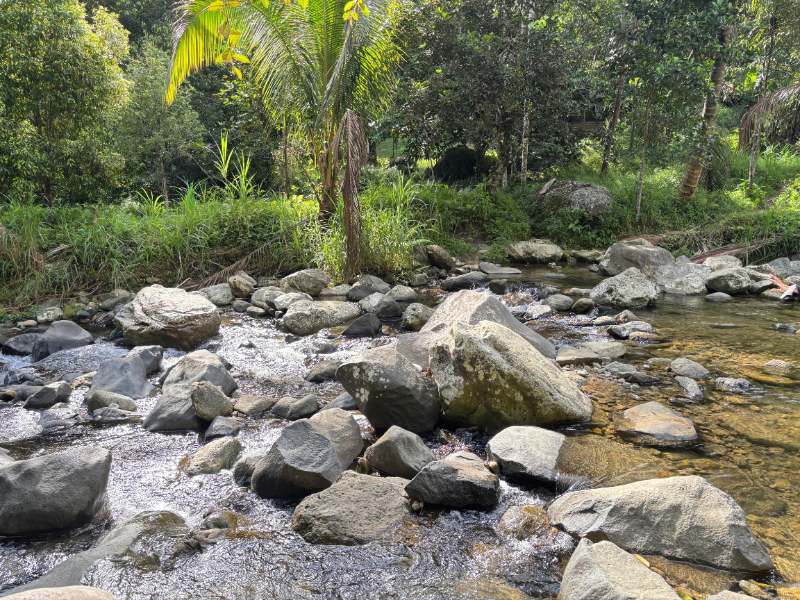
Feature travel journalism piece on discovering a hidden waterfall in Kuranji, Padang written for a News Writing course.
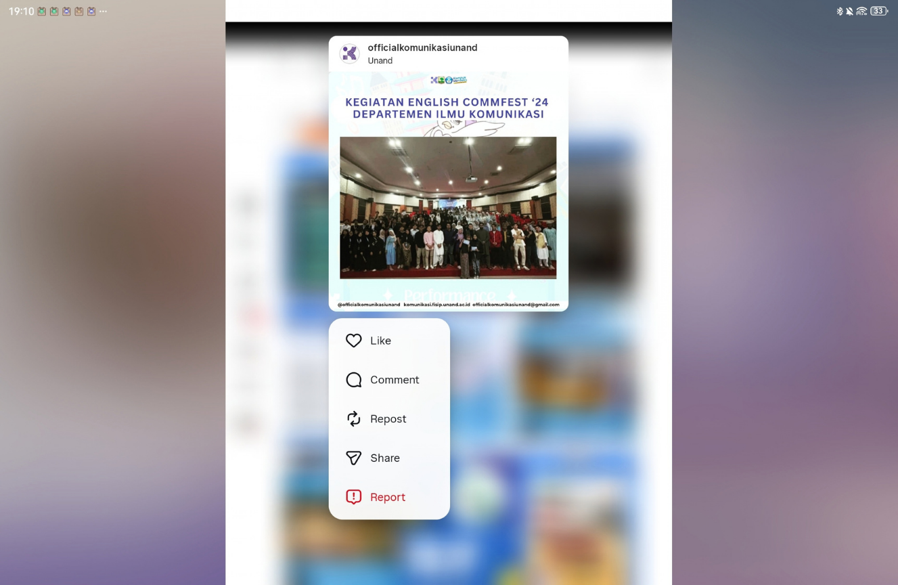
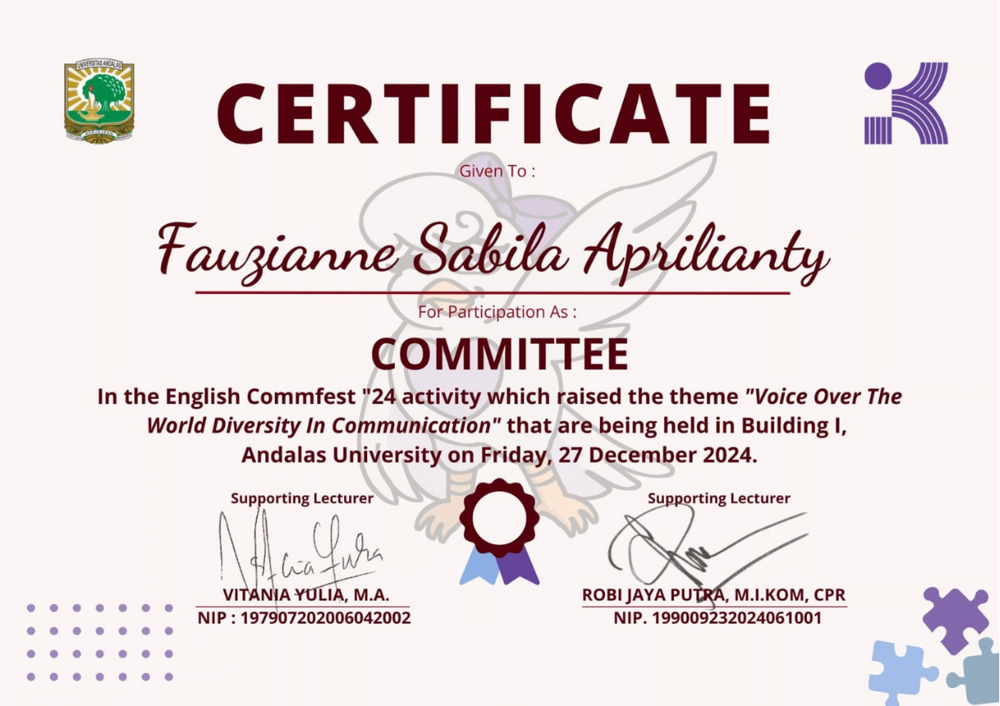
Founded and led the first department-scale English Comm Festival, now an annual tradition.
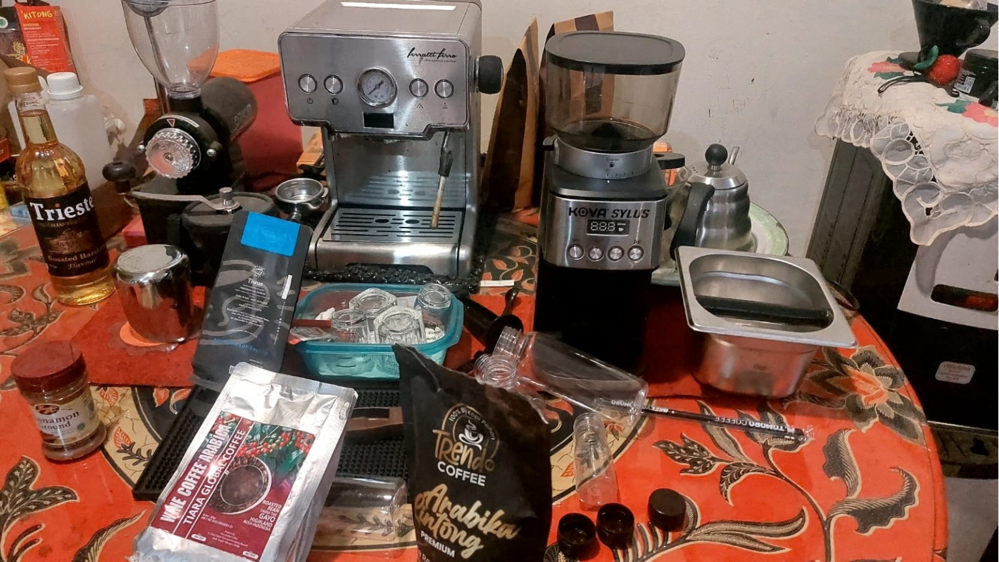
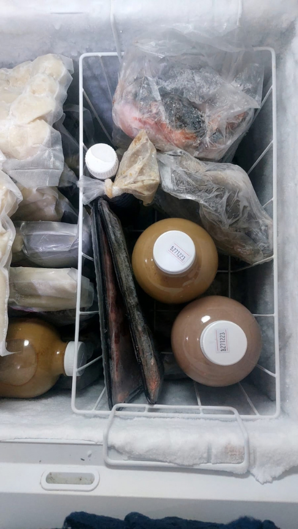
Founded and operated Kopi Omah, a home-based pre-order (PO) coffee shop, for nearly two years under the government's TKM (Tenaga Kerja Mandiri) entrepreneurship program by the Ministry of Manpower. Managed the full business cycle from order intake, production, to fulfillment.